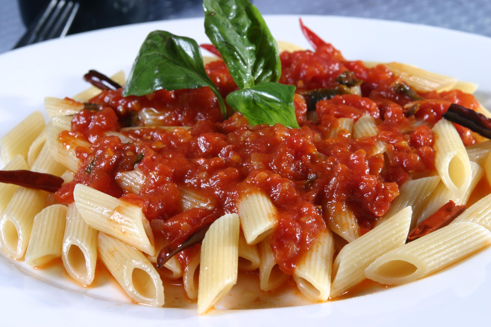
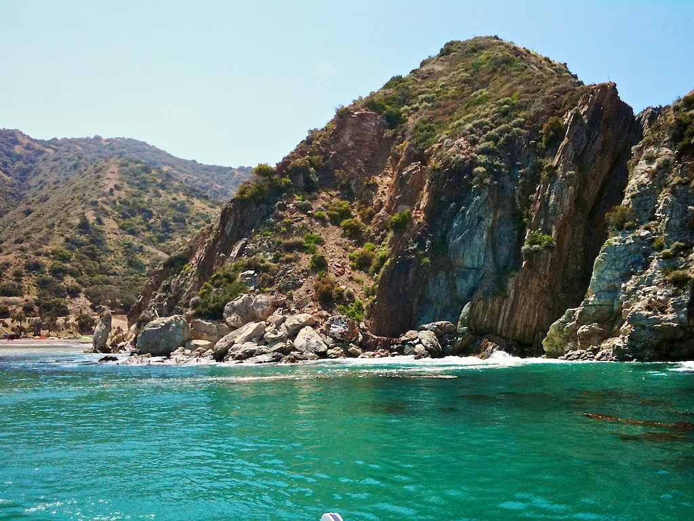

I am fond of many types of food, however pasta with arrabbiata sauce is definitely my favorite. It is a beautiful contrast of fruity tomato and a slight spiciness that interests and satisfies the taste buds without wrecking you like Thai food does. I also enjoy marble cake (chocalate and vanilla), which my oma often cooked for me when I visited.


The ocean is a gigantic fish tank with shifts in temperature and chemical makeup that are subject to infinite externalities and cause constant flux. Climate change, runoff of fertilizer from agriculture, outputted treated sewage water, and effluent from factories all contribute to pollution and changes in biotic and abiotic factors of the ocean. This intrigues me immensely and remains something that I know I will always yearn to understand, but never completely be able to. Therefore, the ocean is something that I will always maintain respect for.